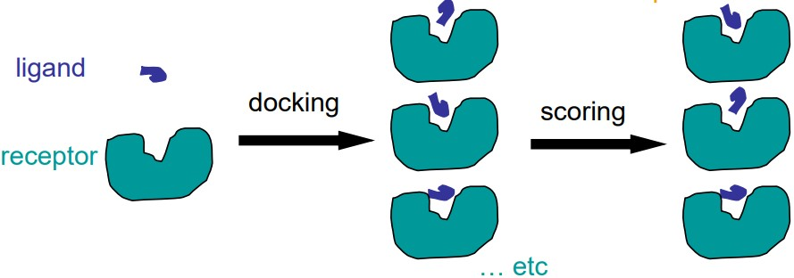
8 Docking and Drug Discovery
Docking is the act of placing a ligand (i.e., a small molecule) into the binding site of a receptor in an appropriate manner so that it may interact with the receptor.
Scoring is the evaluation of the ligand-receptor interactions in a way that may distinguish between experimentally-observed results and also estimate the binding affinity.
Docking is done to discover how best to optimize drug binding to their targets as drug discovery costs are quite high (i.e. about 800 million dollars just to go through 10000 compounds in eight to 14 years).
8.1 Determinants for Binding
Biding is a complex process that is controlled by several factors, including:
- Interaction energies between two different energies.
- Desolvation and solvation energies associated with interacting molecules.
- Entropic factors that occur upon binding.
8.1.1 “Lock and Key” Principle
“The specificity of an enzyme (the lock) for its substrate (the key) arises from their geometrically complementary shapes.”
– Emil Fischer (1894)
This model proposes that a molecule fits into the enzyme like a key fitting into a lock.
8.1.2 Induced Fit Model
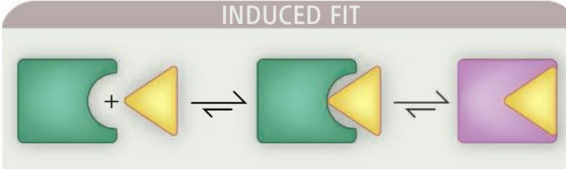
Proteins in their apo conformations have different shapes in their holo states. When a ligand binds to the enzyme’s active site, this induces a sort of conformational change within the enzyme itself.
This model is supported by X-ray structures of the same protein in the apo (i.e., open) form without the ligand’s presence and in thte holo (i.e., closed) form with the ligand binding.
8.1.3 Conformational Selection
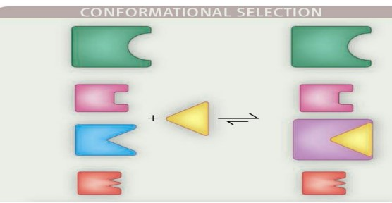
Prior to the binding interaction, the protein is an ensemble of conformations that exist in dynamic equilibrium. The binding partner (i.e., ligand) then interacts with a weakly populated, higher-energy conformation, causing the equilibrium to shift in favor of the selected conformation.
8.1.4 Protein-Ligand Binding Process
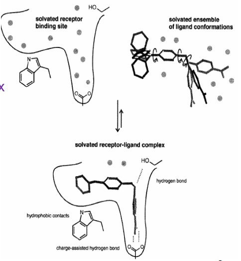
Protein-ligand binding is a complex process between:
- An ensemble of solvated ligand conformations
- A sovlated receptor binding site
- A solvated receptor-ligand complex
Binding free energies may involve:
- Enthalpic components (e.g., breaking and forming new hydrogen bonds and forming hydrophobic components)
- Entropic components (e.g., loss of conformational flexibility)
- Desolvation effects
8.2 Components of Docking
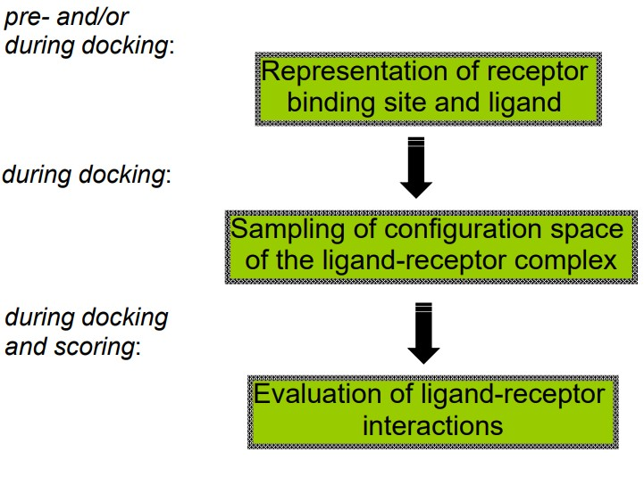
The above graphic lists three main components of docking that BS3008 covers.
8.2.1 Binding Site Descriptions
The Protein Data Bank (i.e., PDB) is a publicly available database that contains proteins or enzymes.
However, Davis et al. notes the following limitations of experimental structures (in general):
- Locations of hydrogen atoms, water molecules, and metal ions.
- Identities and locations of heavy atoms
- Conformational flexibility of proteins
Binding sites can be described in terms of atomic coordinates, volume, points & distances, and various properties such as electrostatic interactions and atom types.
However, Davis et al. notes several limitations of experimental structures:
- The locations of metal ions, hydrogen ions, and water molecules may be off.
- The identities of the metal ions may be off in a biomolecule’s PDB file.
- Conformational flexibility of proteins may be off.
8.2.2 Drug, Chemical, and Structural Space
Prof. Mu lists some resources for drug and chemical structures:
- The MDL Drug Data Report (i.e., MDDR) has more than 147000 entries and the Comprehensive Medicinal Chemistry (i.e., CMC) more than 8600 entries.
- The Available Chemical Directory has about three million entries.
- Beilstein, Chemical Abstract Services (i.e., CAS), and SciFinder - both literature finding services
- Cambridge Structural Database (i.e., CSD) - this has about three million X-ray crystal structures for more than 264000 different compounds and more than 12800 organic structures.
- Corporate databases also a have a few million entries.
8.2.3 3D Structural Information and Ligand Descriptors
Prof. Mu continues listing some more resources in this section:
2D to 3D Software
Including CORINA, OMEGA, CONCORD, MM2/3, WIZARD, and COBRA.
CSD
It contains sizes of less than 0.1 Angstrom for small molecules, but may not be the bound conformation to the receptor in question.
PDB
This resource has about 6000 entries of ligand-bound protein structures.
8.3 Sampling the Configuration Space of the Ligand-Receptor Complex
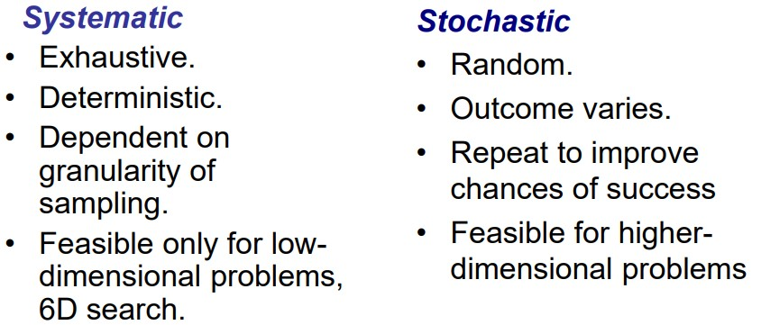
The above graphic lists some differences between a stochastic and a systematic complex.
A sampling requires the following parameters:
Position or Translation
In other terms, the three Cartesian coordinates \(x\), \(y\) and \(z\).
Orientations
This refers to the derivatives of the above Cartesian coordinates \(dx\), \(dy\) and \(dz\).
Rotatable Bonds or Torsions
This is represented as \(tor_1\), \(tor_2\), \(tor_n\), and so on (where \(n\) is some positive integer).
Total DOF (i.e., dimensionality)
This is given by the formula \(D = 3 + 3 + n\).
8.3.1 Estimating Search Spaces
A typical ligand binding pocket is about 103 Angstroms big. A typical ligand has four rotational bonds.
The granularity has an angle sampling of 10 degrees and a translation of a 0.5 Angstrom grid. Hence, the total number of possible sampling configurations is about \(20^3 \cdot 36^3 \cdot 36^4 \approx 6 \times 10^{14}\).
Given that a computer can process about 1000 conformations per second, a search space this size could easily result in 20000 years per ligand.
Consequently, other methods - such as descriptor matching (which uses pattern-recognizing methods to match ligands and receptor sites), molecular dynamics, monte carlo simulations, genetic algorithms, similarities, and fragment-based approaches - must be utilized.
Some examples of descriptor matching methods include:
- Distance-compatibility graphs in the DOCK program
- Interaction site matching in the LUDI program
- Pose clustering and triplet matching in the FlexX program
- Shape matching in the FRED program
- Vector matching in the CAVEAT program
- Steric effects matching in the CLIX program
- Shape chemical complimentarity in the SANDOCK program
- Surface complimentarity in the LIGIN program
- H-bond matching in the ADAM program
However, the following disadvantages must be noted:
- One can never truly sample the entire conformation and the configuration space - it is simply too large.
- One cannot ignore the conformational flexibility of the ligand and the receptor.
- There is no one “best” method or general solution for describing and matching molecular shapes. Shape alone is not a good indicator of a low-energy conformation in a ligand-receptor complex.
8.3.1.1 Method 1: Clique Search
This is a descriptor-matching method that uses distance-compatibility graphs in the DOCK program:
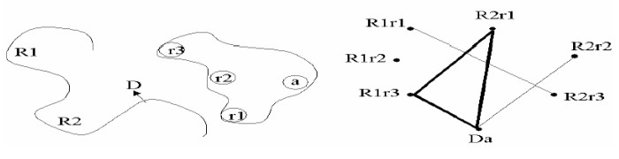
A Distance-Compatibility graph is a graph where each node represents possible matches and each edge a pair of compatible nodes.
A clique in graph theory is a subgraph that is fully connected. There are fast algorithms that can optimize this problem.
8.3.1.2 Method 2: Molecular Dynamics (i.e., MD) and Monte Carlo (i.e., MC) Simulations
The two major components of this system are the energy evaluations and the description of the energies of freedom.
Local movement of the atoms are preferred - this is random in a Monte Carlo simulation due to forces in a molecular dynamics setup.
However, both MD and MC are time consuming as not only do both approaches start from a “starting orientation”, but multiple simulations with different “starting orientations” must also be performed to get a statistically significant result.
Larger steps are typically used for speed in a MD simulation.
8.3.1.2.1 Using a Grid Map
A grid map is a representation of a macromolecule (i.e., a regular orthogonal lattice of points). A man has one ligand atom type.
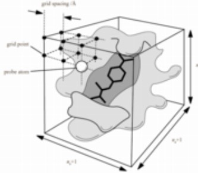
All AutoDock-generated grid maps use trilinear interpolation. Non-bonded energies are pre-calculated.
Grid maps save time - they are a 100 times faster than traditional non-bonded list methods.
8.3.1.2.2 MC-Based Dockings
The good part about using a MC-based approach is that prior information does not need to be known - it is able to “step over an energy barrier”.
Simulated Annealing is used in the program DockVision and Affinity.
8.3.1.2.3 Simulated Annealing (i.e., SA)
Simulated Annealing is the generalization of a Monte Carlo method for examining the equations of state and frozen states of n-body systems. This process is based on how liquids freeze or how metals recrystalize.
In an annealing process, the material is initially at a high temperature and is disordered. It is slowly cooled over time (to the ground state \(T = 0\)) so that it can roughly reach thermodynamic equilibrium.
If the initial temperature of the system is too low or if the cooling is not done properly, then the system may form defects or lose metstable states (i.e., be trapped in a local minimum energy state).
8.3.1.3 Fragment-Based Methods
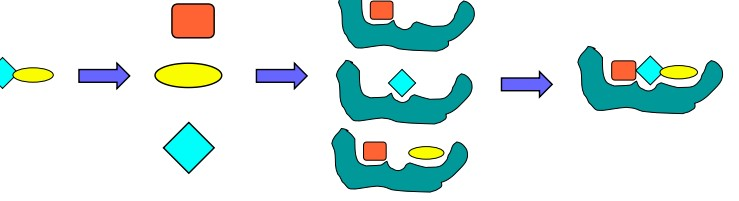
The identification and the placement of a base or an anchor fragment is critical. Energy optimization is also important here.
8.3.1.3.1 Fragment-Based Lead Discovery
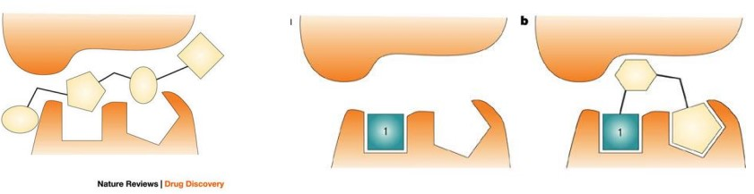
The high-throughput screening (i.e., HTS) hit is large and makes surface contact with the receptor without forming high-quality interactions in key pockets.
The affinity is spread throughout the entire molecule and, in the absence of structural information, the medicinal chemist does not know which areas of the molecule to focus on during hit optimization.
This is in contrast to the schematic on right side, in which fragment 1 is much smaller, makes high-quality contacts with the receptor and has relatively weak affinity. It has been shown that such fragments can often be built up into attractive leads with the aid of structural information.
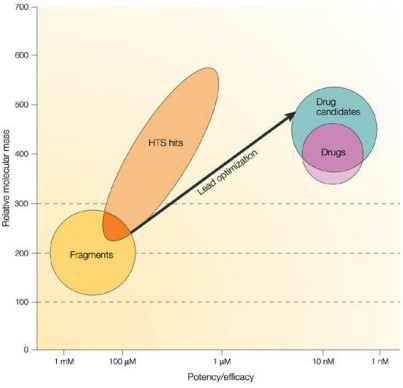
The figure shows graphically a broad generalization of the range of molecular mass and potency for high-throughput screening (i.e., HTS) hits and fragments, superimposed on the typical requirements for leads, drug candidates and oral drugs using the same criteria.
Fragment hits will have an Mr in the range 120–250 and low potency (mM–30 \(\mu\)M); HTS hits will have a much broader range of Mr (perhaps 250–600) and tend to be in the low-\(\mu\)M to high-nM potency range.
8.3.1.4 Genetic Algorithm Docking
In this algorithm, degrees of freedoms are encoded as genes or binary strings; this algorithm also requires the generation of an initial population.
After each reproduction cycle, the binary strings are then translated back to their candidate states (i.e., Cartesian coordinates) - the fitness of these strings are also evaluated by an appropriate function.
Candidates with a better fitness have a higher probability to partake in the next reproduction cycle - in the end, only states with the highest fitnesses will survive.
8.3.1.4.1 An Example:
A coolection of genes (i.e., a chromosome) is assigned a fitness value depending on a scoring function. There are two such genetic operators:
Mutation
This changes the value of a gene.
Crossovers
These exchange a set of genes from one parent chromosome to another.
A fitness function is then used to decide which configurations (i.e., individuals) survive and produce offspring for the next iteration of optimization.
8.3.1.5 Multiple Methods
Sometimes, more than one docking protocol can be combined to increase a protocol’s effectiveness.
Typically, a computationally-inexpensive method, followed by a time-consuming, yet more accurate method is used to generate a final docking solution.